Heart BioAmp Candy#
Ringkasan#
Heart BioAmp Candy adalah sensor berukuran permen untuk merekam sinyal ECG dengan mudah. Ini sempurna untuk siswa dan peneliti karena menawarkan rekaman ECG yang andal dan akurat, membuat pemantauan jantung dapat diakses dan nyaman untuk tujuan pendidikan dan penelitian.
{kind=link}
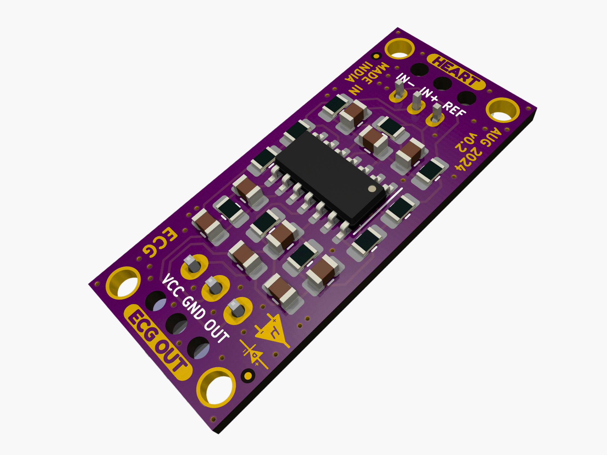
Heart BioAmp Candy#
Fitur & Spesifikasi#
Perangkat Keras#
{kind=link}
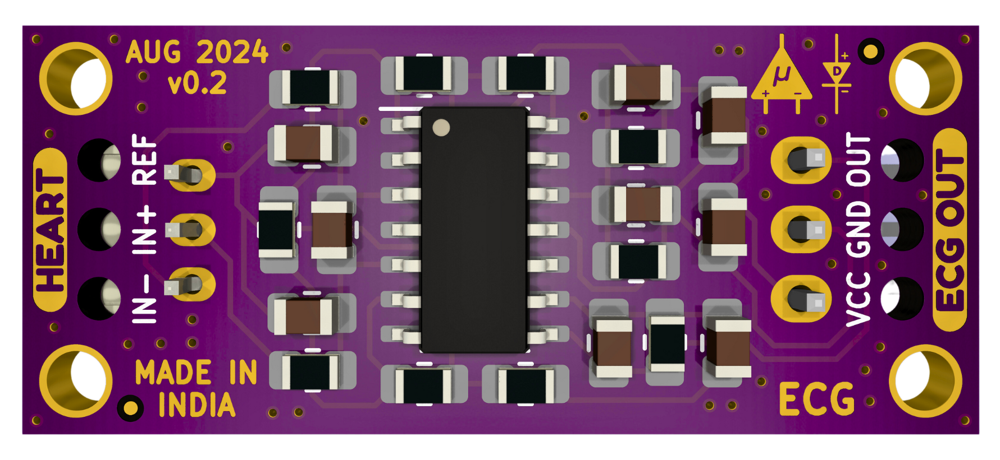
Render PCB Dirakit - Depan#
{kind=link}
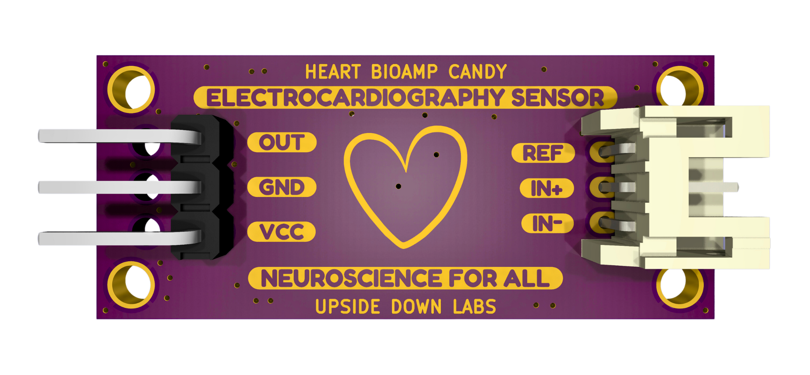
Render PCB Dirakit - Belakang#
{kind=link}
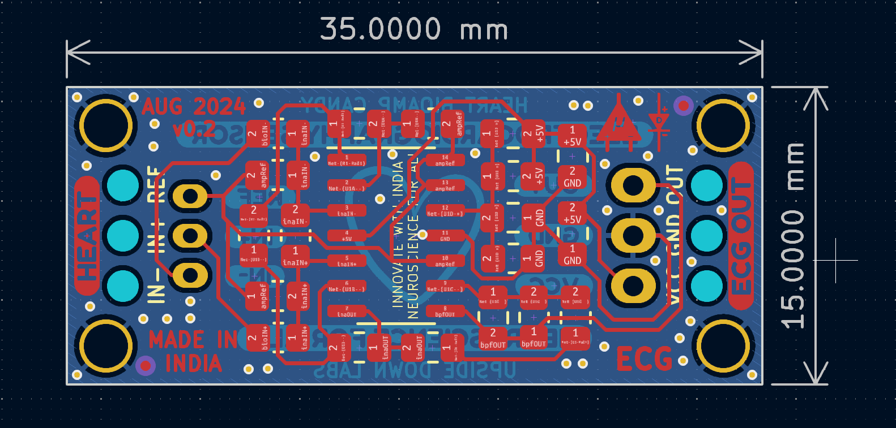
Tata Letak PCB#
{kind=link}
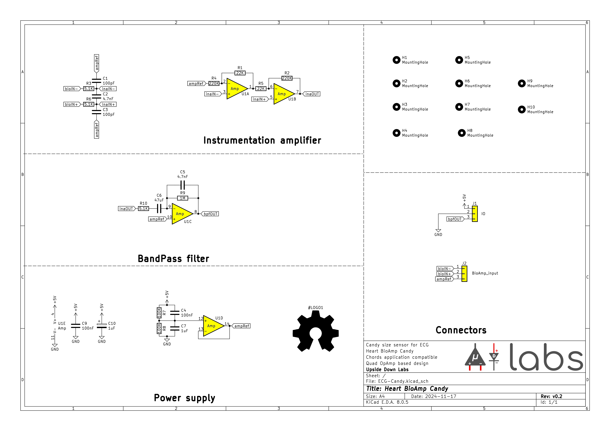
Diagram Skematik#
Isi kit#
Isi kit |
Qty |
|---|---|
Heart BioAmp Candy |
1 |
BioAmp Cable v3 (100cm) |
1 |
Jumper cables (pack of 3) |
1 |
Heart BioAmp Band (ECG Band) |
1 |
Gel electrodes |
12 |
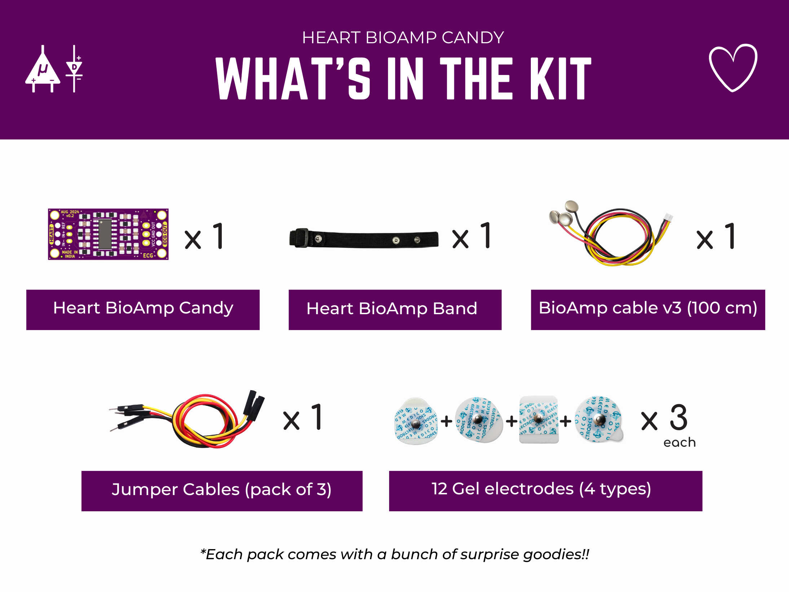
Persyaratan perangkat lunak#
Mengunggah kode: Sebelum Anda mulai menggunakan kit, silakan unduh Arduino IDE. Dengan menggunakan ini Anda akan dapat mengunggah Chords Arduino Firmware di papan pengembangan Anda.
Memvisualisasikan sinyal: Setelah mengunggah firmware, Anda dapat menggunakan Chords, aplikasi web sumber terbuka yang dikembangkan oleh kami untuk merekam dan memvisualisasikan sinyal biopotensial real-time (ECG, EMG, EEG, EOG).
Menggunakan kit#
Langkah 1: Koneksi dengan papan pengembangan#
Hubungkan Heart BioAmp Candy Anda ke MCU/ADC Anda sesuai dengan tabel koneksi yang ditunjukkan di bawah:
Heart BioAmp Candy |
MCU/ADC |
|---|---|
VCC |
5V |
GND |
GND |
OUT |
Input ADC |
Saat membuat koneksi dengan papan pengembangan, pastikan untuk menggunakan kabel jumper yang disediakan dalam kit.
{kind=link}
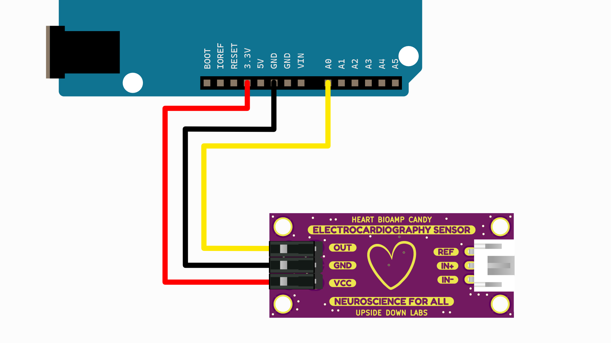
Heart BioAmp Candy - Koneksi papan pengembangan#
Note
Untuk tujuan demonstrasi kami menunjukkan koneksi sensor dengan Arduino UNO R3/R4 tetapi Anda dapat menggunakan papan pengembangan lain atau ADC mandiri pilihan Anda.
Warning
Berhati-hatilah saat menghubungkan ke daya, jika pin daya (GND & VCC) ditukar, sensor Anda akan terbakar dan menjadi tidak dapat digunakan (DIE).
Langkah 2: Menghubungkan kabel elektroda#
Hubungkan kabel BioAmp ke Heart BioAmp Candy dengan memasukkan ujung kabel di konektor JST PH seperti yang ditunjukkan.
{kind=link}
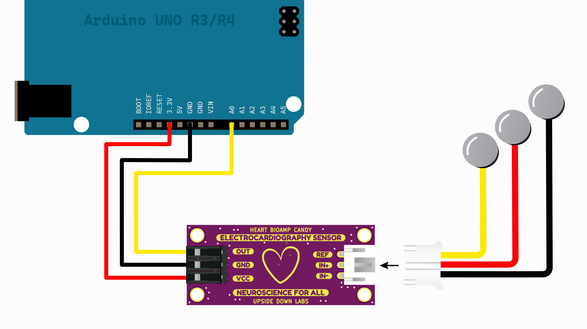
Heart BioAmp Candy - Koneksi kabel elektroda#
Langkah 3: Persiapan Kulit#
Oleskan Gel Persiapan Kulit Nuprep pada permukaan kulit tempat elektroda akan ditempatkan untuk menghilangkan sel kulit mati dan membersihkan kotoran dari kulit. Setelah menggosok permukaan kulit secara menyeluruh, bersihkan dengan tisu alkohol atau tisu basah.
Untuk informasi lebih lanjut, silakan lihat langkah-langkah detail Panduan Persiapan Kulit.
Langkah 4: Mengukur ECG (Elektrokardiografi)#
Penempatan elektroda#
Kami memiliki 2 opsi untuk mengukur sinyal ECG, baik menggunakan elektroda gel atau menggunakan Band BioAmp Jantung berbasis elektroda kering. Anda dapat mencoba keduanya satu per satu.
Menggunakan elektroda gel:#
Hubungkan kabel BioAmp ke elektroda gel,
Kupas backing plastik dari elektroda
Tempatkan IN+,IN- dan REF seperti yang ditunjukkan di diagram koneksi.
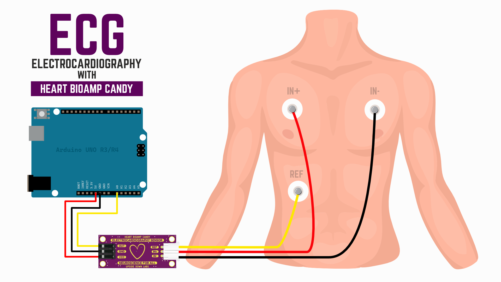
Menggunakan Heart BioAmp Candy untuk mengukur ECG dengan elektroda gel#
Menggunakan Heart BioAmp Band:#
Pasangkan kabel IN- di sisi kiri, IN+ di tengah, dan REF di sisi jauh band.
Sekarang letakkan tetesan kecil gel elektroda antara kulit dan bagian logam kabel BioAmp untuk mendapatkan hasil terbaik.
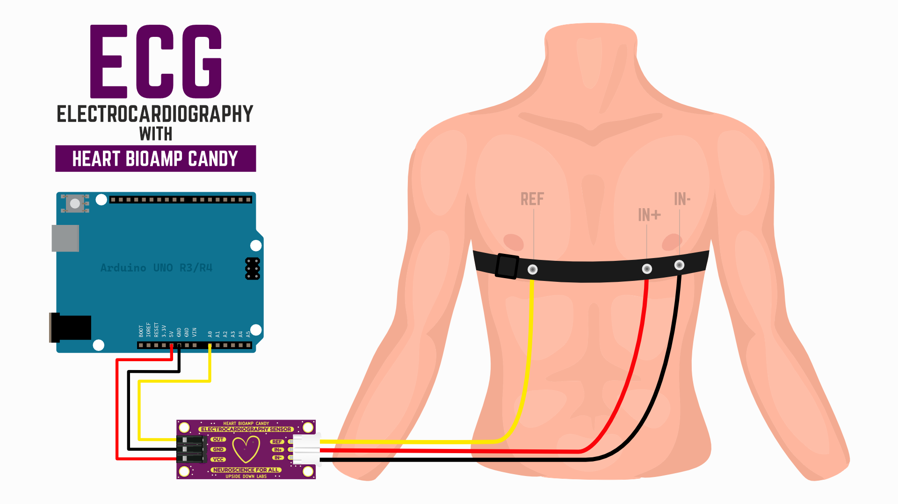
Menggunakan Heart BioAmp Candy untuk mengukur ECG dengan Heart BioAmp Band#
Tip
Kunjungi dokumentasi lengkap tentang cara merakit dan menggunakan Band BioAmp atau ikuti video youtube tutorial.
Mengunggah firmware#
Hubungkan papan pengembangan ke laptop Anda menggunakan kabel USB yang kompatibel. Salin tempel Chords Arduino Firmware di Arduino IDE.
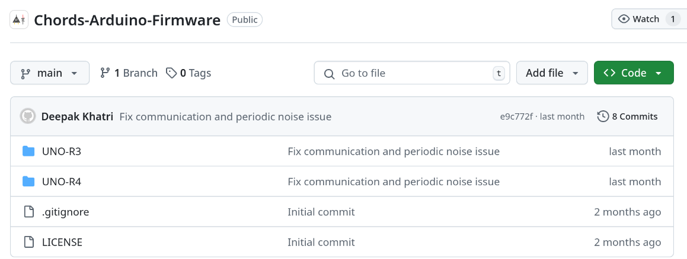
Firmware Arduino Chords#
Note
Unggah firmware Arduino sesuai dengan papan pengembangan yang Anda gunakan. Jika Anda menggunakan Arduino UNO R3 maka Anda harus mengunggah firmware UNO-R3 tetapi jika Anda menggunakan Arduino UNO R4 maka pastikan untuk mengunggah firmware UNO-R4.
Sekarang pergi ke tools dari menu bar, pilih opsi board lalu pilih nama papan yang benar sesuai dengan papan pengembangan yang Anda gunakan. Di menu yang sama, pilih port COM tempat papan Anda terhubung. Untuk mengetahui port COM yang benar, putuskan sambungan papan Anda dan buka kembali menu. Entri yang menghilang haruslah port COM yang benar. Sekarang unggah kode.
Warning
Pastikan laptop Anda tidak terhubung ke charger dan duduk 5m jauh dari peralatan AC apa pun untuk akuisisi sinyal terbaik.
Memvisualisasikan sinyal ECG menggunakan Chords#
Kunjungi situs web aplikasi Chords.
Klik pada
visualize now.Klik pada
connect.Pilih port COM yang benar di pop-window dan klik pada
connectuntuk menghubungkan papan pengembangan Anda ke Chords.Anda akan dapat melihat sinyal ECG Anda di layar.
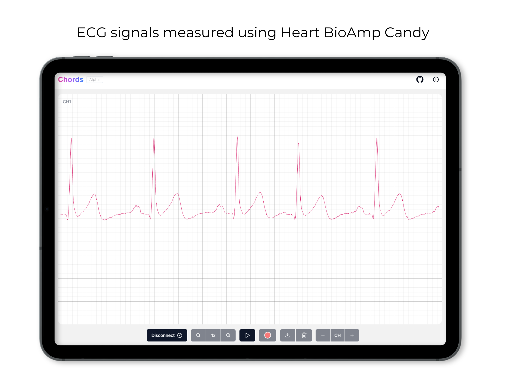
Note
Untuk informasi lebih lanjut, kunjungi dokumentasi lengkap aplikasi Chords.